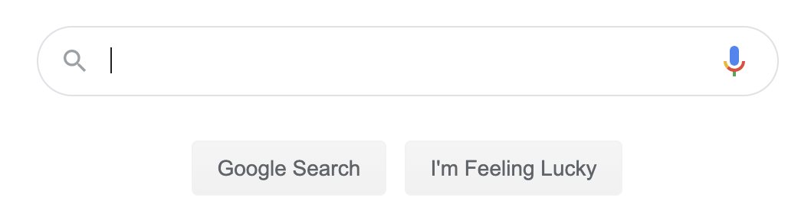

An introduction to search engines

Search engines are one of the most influential developments of the modern internet age and have completely revolutionized how users interact with the web. What was once an intractable jumble of data with no semblance of organization has become a treasure trove of useful information due to the magic of search. Armed with the power of Map and Set, you can recreate this phenomenal achievement yourself. Once completed, you will understand the core technology underpinning Spotlight, Google, and Bing, and have solid practice in the use of the Map and Set ADTs.
Want to see the power of search right now? Click üîç Search in the top-right of the page navigation bar and search for easter egg to see what lurks deep in the recesses of the course website‚Ķ
In your search engine, each web page has a URL ("Uniform Resource Locator") that serves as its unique id and a string containing the body text of the page. You will first write functions that pre-process the body text and populate the data structure. Next you'll implement the function to search for pages matching a search query. Finally, you will write a console program that allows the user to enter many search queries and retrieve the matching web pages. Put all together, you will have built your own mini search engine!
Understanding the web page data
We have harvested the body text from the pages of our course website into a database file that is provided in the starter project. The format of the database file is as follows:
- The lines of the file are grouped into pairs with the following structure:
- The first line of a pair is a page URL.
- The second line of a pair is the body text of that page, with all newlines removed (the entire text of the page in a single string).
- The first two lines in the file form the first pair. The third and fourth lines form another pair, the fifth and sixth another, and so on, with alternating lines of page URL and page content.
To view an example database, open the file tiny.txt or website.txt in the folder Other files/res of the starter project.
Using an inverted index for searching
To make our search efficient, we need to be thoughtful about how we structure and store the data. A poor choice in data structures would make search painfully slow, but clever use of our wonderful ADTs can avoid that fate. A search engine typically uses a nifty arrangement known as an inverted index.
An inverted index is akin to the typical index in the back of a book. If you look up the keyword "internet" in the index of the CS106B textbook, it lists two page numbers, 18 and 821. The word internet occurs on page number 18 and again on page number 821. Thus, an inverted index is a mapping from word to locations. You look up a keyword in an inverted index to find all the locations where that keyword occurs.
In contrast a forward index operates in the other direction. For our book example, the forward index would be a mapping from a location (page number) to all the words that occur on that page. To build an inverted index, you typically start with the data in the form of a forward index and then process to convert to the inverted form. Inverting the index takes time up front, but once complete, the inverted index supports extremely fast operations to find query matches.
On to the code!
Decomposition is one of your best tools for tackling a complex problem. We'll guide you along by breaking the problem down into a sequence of steps. Follow our steps to success!
All of the functions and tests for the search engine are to be implemented in the file search.cpp.
1) Write helper function cleanToken()
Start by writing a helper function for this small but key string-processing task:
string cleanToken(string token)
cleanToken takes in a string token and returns a "cleaned" version of the token, ready to be stored in the index. To clean a token, extract only the letter and number characters and convert all letters to lowercase, i.e. "Wow!" becomes "wow", mid-quarter" becomes "midquarter", and "CS106B" becomes "cs106b". Standardizing on this simple canonical form allows search queries to operate case-insensitively and ignore punctuation.
You might want to start by reworking the code from the lettersOnly function you wrote for Soundex and change/extend as necessary. The return value from cleanToken is the cleaned lowercase version, or will be empty string if the token is to be discarded (i.e. contains no letter or number characters).
Write test cases to confirm that cleanToken works correctly in all situations before moving on! You will make heavy use of cleanToken when building the inverted index and if this helper mishandles tokens, it will throw off your results and lead to sad times. It is definitely worth your time to confirm with a solid set of test cases before moving on. Remember to label your tests as STUDENT_TEST.
2) Write helper function gatherTokens()
The helper function gatherTokens extracts the set of unique tokens from the body text.
Set<string> gatherTokens(string bodytext)
The argument to gatherTokens is a string containing the body text from a single web page. The function returns a Set of the unique cleaned tokens that appear in the body text.
The function first tokenizes the body text — this means to separate the string into words using the space character as delimiter. Call the stringSplit function from the Stanford library for this task. Then call your cleanToken helper function on each token and store the cleaned tokens into a Set. No matter how many repeat occurrences of a given word are in the body text, repeatedly adding it to a set stores just the one copy, which makes this ADT ideal for gathering the unique tokens.
Time to test! Add test cases that confirm the output from gatherTokens, so you will later be able to call on this function with confidence that it does its job correctly.
3) Create inverted index in buildIndex()
The function buildIndex reads the content from the database file and processes it into the form of an inverted index.
int buildIndex(string dbfile, Map<string, Set<string>>& index)
The first argument to buildIndex is the name of the database file of the web page data, the second argument is the Map to be populated with data for the inverted index. The return value of buildIndex is the number of documents processed from the database file.
Before starting to code, work through a small example on paper to ensure you understand the data structure you are trying to build. Open the res/tiny.txt database file and manually process the content to build the inverted index.
Q7. List the contents of the inverted index built from the res/tiny.txt database file.
When you are ready to start writing code, read the previous section Understanding the web page data to review the format of the database file. Look at the code we provided for readMazeFile in maze.cpp for an example of C++ code to open a file and read the contents into a Vector of lines. Feel free to reuse that code for buildIndex.
For each page, you will call gatherTokens to extract the set of unique tokens. For each token in the page, you record the match to the page's URL by adding to its entry in the inverted index. The index is of type Map<string, Set<string>>, this map associates each keyword with the set of the URLs where that word occurs. The function returns the count of web pages that were processed.
Our starter code contains some provided tests to get you started; add student tests of your own to ensure your coverage is comprehensive. Use a TIME_OPERATION test to confirm your function operates in reasonable time. Building the inverted index should generally not take more than 5 seconds.
4) Search using findQueryMatches()
Next up is to implement the function:
Set<string> findQueryMatches(Map<string, Set<string>>& index, string query)
The query string can either be a single search term or a compound sequence of multiple terms. A search term is a single word, and a sequence of search terms is multiple consecutive terms, each of which (besides the first one) may or may not be preceded by a modifier like + or - (see below for details). The same stringSplit function used to divide the body text into tokens will be used to divide the query sentence into search terms.
The matches to a query are found by following these rules:
- If the query is a single search term, the matches are the web pages containing that term.
- If the query contains two or more search terms, it is a compound query. The results for a compound query are a combination of the matches for the terms considered singly.
- When a query contains additional search terms, the matches for those terms are added to the existing results. (results will match either term)
- Hint: use Set operation
unionWith
- Hint: use Set operation
- A search term has a slightly altered meaning when the term is prefaced by certain modifiers:
- If the user prefaces a search term with
+, then matches for this term are intersected with the existing results. (results must match both terms)- Hint: use the Set operation
intersect
- Hint: use the Set operation
- If the user prefaces a search term with
-, then matches for this term are removed from the existing results. (results must match one term without matching the other)- Hint: use the Set operation
difference
- Hint: use the Set operation
- When a query contains additional search terms, the matches for those terms are added to the existing results. (results will match either term)
- The same token cleaning applied to the body text is also applied to query terms. Call your helper
cleanTokento process each search term to strip punctuation and convert to lowercase before performing the search for matches.
Note that searching is case-insensitive, that is, a search for "binky" returns the same results as "Binky" or "BINKY". Be sure to consider what implications this has for how you create and search the index.
Here are some example queries and how they are interpreted
quokka- matches all pages containing the term "quokka"
simple cheap- means
simple OR cheap - matches pages that contain either "simple" or "cheap" or both
- means
tasty +healthy- means
tasty AND healthy - matches pages that contain both "tasty" and "healthy"
- means
tasty -mushrooms- means
tasty WITHOUT mushrooms - matches pages that contain "tasty" but do not contain "mushrooms"
- means
tasty -mushrooms simple +cheap- means
tasty WITHOUT mushrooms OR simple AND cheap - matches pages that match ((("tasty" without "mushrooms") or "simple") and "cheap")
- means
There is no precedence for the operators, the query is simply processed from left to right. The matches for the first term are combined with matches for second, then combined with matches for third term and so on. In the last query shown above, the matches for tasty are first filtered to remove all pages containing mushrooms, then joined with all matches for simple and lastly intersected with all matches for cheap.
You may assume that the query sentence is well-formed, which means:
- The query sentence is non-empty and contains at least one search term
- If a search term has a modifier, it will be the first character
- A modifier will not appear on its own as a search term
- A
+or-character within a search term that is not the first character is not considered a modifier
- The first search term in the query sentence will never have a modifier
- You can assume that no search term will clean to the empty string (i.e. has at least one letter)
There is a lot of functionality to test in query processing, be sure you add an appropriate range of student tests to be sure you're catching all the cases.
5) Put it all together with searchEngine()
Thus far, your amazing code has re-arranged a mass of unstructured text data into a highly-organized inverted index with instantaneous retrieval and fancy query-matching capability. Now take it over the finish line to build your own search engine!
The final function to implement is:
void searchEngine(string dbfile)
This function implements a console program that works as follows:
- It first constructs an inverted index from the contents of the database file.
- It prints how many web pages were processed to build the index and how many distinct words were found across all pages.
- It enters a loop that prompts the user to enter a query
- For each query entered by the user, it find the matching pages and prints the URLs.
- When the user enters the empty string (
""), this indicates they are done and the program finishes.
After you have completed this function, your program should behave as shown in the transcript shown below.
Example program run (executed by running searchEngine("res/website.txt") in main.cpp):
Stand by while building index...
Indexed 38 pages containing 5598 unique terms.
Enter query sentence (RETURN/ENTER to quit): citation
Found 3 matching pages
{"https://cs106b.stanford.edu/assignments/2-adt/searchengine.html",
"https://cs106b.stanford.edu/citation", "https://cs106b.stanford.edu/honor_code"}
Enter query sentence (RETURN/ENTER to quit): expect_error
Found 4 matching pages
{"http://cs106b.stanford.edu/assignments/2-adt/maze.html",
"http://cs106b.stanford.edu/assignments/2-adt/searchengine.html",
"http://cs106b.stanford.edu/assignments/2-adt/warmup.html", "http://cs106b.stanford.edu/resources/testing_guide.html"}
Enter query sentence (RETURN/ENTER to quit): style +grading
Found 8 matching pages
{"https://cs106b.stanford.edu/about_assignments", "https://cs106b.stanford.edu/assignments/1-cpp/",
"https://cs106b.stanford.edu/assignments/2-adt/", "https://cs106b.stanford.edu/assignments/2-adt/searchengine.html",
"https://cs106b.stanford.edu/lectures/02-cpp/", "https://cs106b.stanford.edu/resources/style_guide.html",
"https://cs106b.stanford.edu/resources/submit_checklist.html", "https://cs106b.stanford.edu/syllabus"}
Enter query sentence (RETURN/ENTER to quit): cs106l template -qt
Found 3 matching pages
{"http://cs106b.stanford.edu/course_placement", "http://cs106b.stanford.edu/faq",
"http://cs106b.stanford.edu/resources/style_guide.html"}
}
Enter query sentence (RETURN/ENTER to quit):
main() completed.
Way to go, üëç you're well on your way to becoming the next internet search pioneer!
Notes
- The
resfolder of the starter project includes two database files:tiny.txtis the small example used in the writeup andwebsite.txtis the body text extracted from all of the pages in our course website (as of Oct 10). You can open these files in Qt Creator to view their contents. The project resource files are listed underOther files->res. Your program can open a resource file by specifying the path as"res/myfilename".
References
- Inverted Index on GeeksForGeeks
- Wikipedia article on Inverted Indexes
- Stanford Natural Processing Group on Tokenization
Extensions
If you have completed the basic assignment requirements and and want to go further, we encourage you to try adding an extension! A non-exhaustive list of potential extensions is listed below:
- Weights
- When you get the results from a Google search, they are ranked so that the more relevant results are first on the list. The current Google algorithm is a well-kept trade secret (though it was originally the Page Rank algorithm, named for its creator, then-Stanford graduate student Larry Page), but a simple approach is to give higher rank to pages with more occurrences of the search term. For this extension, you would need to re-think how you create your index to include the number of matches.
- Phrase search
- The assignment does not allow a search for multi-word terms, such as
section leader. Searching for phrases is not trivial, as you cannot simply keep a mapping of all possible phrases in the document. You could, however, keep track of where in each document a word is, and then use that information to determine if words in a phrase are next to each other in any particular document.
- The assignment does not allow a search for multi-word terms, such as
- Stop Words
- The English language has many, many words that show up in text but are not particularly important for content, such as
the,and,if,a, etc. These words are called Stop Words, and it would make your index smaller if you removed such stop words from the index. Here is more info about stop words.
- The English language has many, many words that show up in text but are not particularly important for content, such as
- Stemming
- In the current design, if a user searches for
sectionthey won't find matches forsections, even though pages that mention either might be a relevant match. Stemming is the process of reducing words to their base form, so that (for example) bothsectionandsectionswould become, simply,sectionin the index.
- In the current design, if a user searches for
If you have other creative ideas for extensions, run them by the course staff, and we'd be happy to give you guidance!